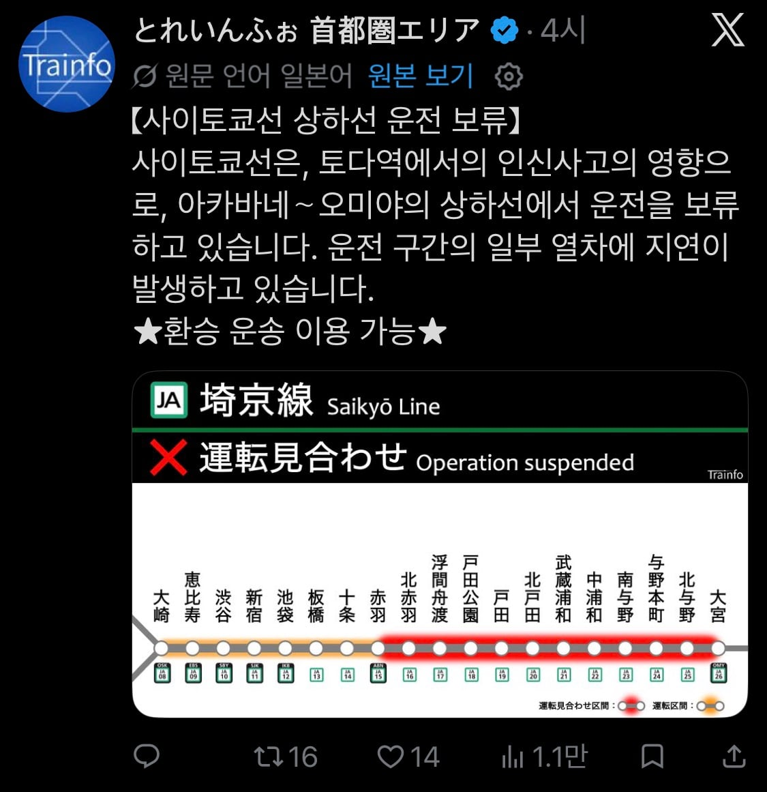
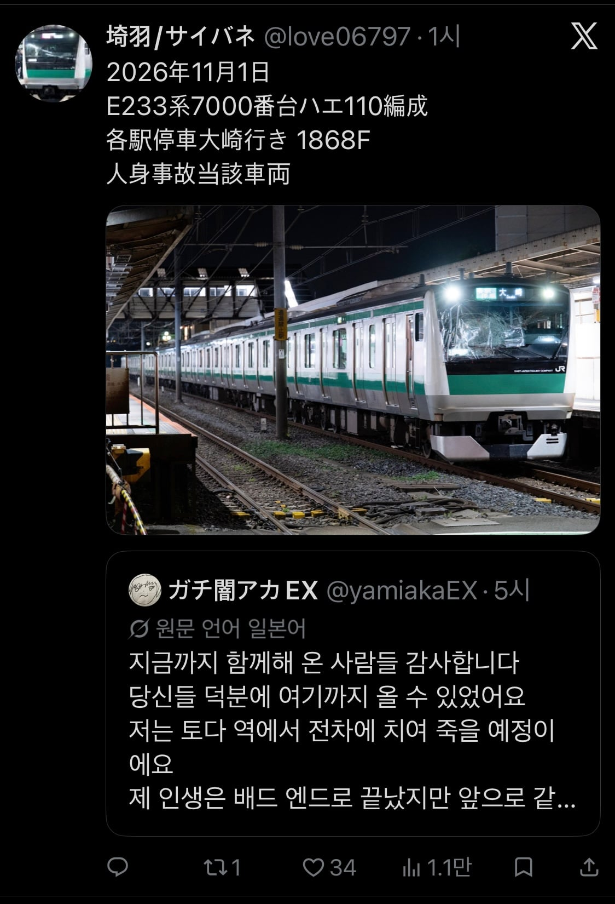

몸 곳곳엔 빨간펜으로 '소생 거부' 적어놓음


몸 곳곳엔 빨간펜으로 '소생 거부' 적어놓음
기관사는 뭔 죄냐...
왜 자살같은걸 하는거야
이세카이로 갔구나
기관사는 뭔 죄임 진짜로
죽을결심한 애가 그건걸 신경쓸까
차라리 그 숲으로 가지
관종끝판
ㅈㄴ 민폐임 기관사도 주변에 있는 승객도 다 트라우마로 남음… 죽을거면 안보이는데서 죽어라 시체라도 온전해야 수습하는 경찰도 소방관도 터진사람보단 덜 충격받을거아냐
피해끼쳐서 죄송하다고하지말고
산높은절벽에서 뛰어내리면안되나 ??